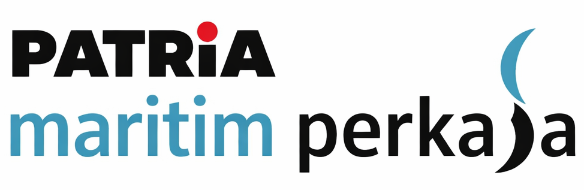

Skema *Build-Operate-Transfer* konvensional memakan waktu bertahun-tahun. Dengan teknologi IPA Modular, suplai kawasan Jekulo dapat dieksekusi secara instan.
Mengapa momentum WaaS adalah jawaban paling rasional saat ini.
Kenaikan tarif Rp1.000/m³ membatasi ruang gerak politik Anda. BPP yang tinggi akibat infrastruktur menua dan beban *chemical* menuntut efisiensi radikal tanpa menaikkan tarif lagi.
Kebijakan pembatasan kuota ABT mendorong industri beralih ke PDAM. Suplai di titik kritis seperti Jekulo & Kawasan Industri tidak seimbang dengan kapasitas terpasang.
Membangun IPA baru konvensional membutuhkan *Capital Expenditure* puluhan miliar yang akan membebani neraca PDAM dan menyandera fleksibilitas fiskal Pemkab Kudus.
Kalkulasi proyeksi ruang margin (Arbitrase Tarif) secara instan. Hitung peningkatan Laba Perumda dan pemangkasan Biaya Pokok Produksi (BPP) tanpa investasi APBD.
Asumsi Tarif Industri (Eksisting) vs Efisiensi BPP WaaS Invila.
*Target BPP Kudus
Projected 5-Year Financial Impact
Beban APBD Dihindari (CapEx)
Rp 0
100% Investasi Off-Balance Sheet
Annual Margin Gain
Rp 0
Lonjakan Laba Perumda / Tahun
Sesuai Prinsip Full Cost Recovery (FCR) BUMD Air Minum.
Untuk fase pertama di Kudus, instalasi air di sisi produksi (hulu) di Kawasan Industri dan Jekulo menawarkan keuntungan politis dan operasional secara bersamaan.
Divisi Produksi & Operasional: Operational Security
Sementara skema OPEX memproteksi Pemkab, Intelligence Layer (SCADA-IoT) Invila secara teknis menekan BPP. Penggunaan *chemical* dan tenaga kerja manual ditekan oleh AI *real-time*. Tim Anda terbebas dari beban pemeliharaan infrastruktur.
Technical Assurance
SLA 99.98% Uptime
Maintenance Cost
100% Ditanggung Invila
LIVE SCADA TELEMETRY - JEKULO HUB
SYNC: 00:00:00Target Volume Industri
2000.0 m³/d
Outlet Quality (NTU)
0.2 NTU
Chemical Dosing
OPT AI CONTROL
System SLA Target
99.98 %
> AI Dosing Pump: STANDBY
AUTO-MODE ACTIVEMari kita bedah anatomi kerangka kerja WaaS.
Transparan secara hukum, aman secara politik.
Level 1: Politisi & Pemkab
Sangat legal. Skema Sewa OPEX (WaaS) adalah model kerja sama daerah (B2B) yang 100% menggunakan dana investor (Invila). Tidak ada beban APBD sama sekali, mudah diterima DPRD.
Tidak. Kami menyasar pasokan Air Curah (*Bulk Water*) Industri. Pemerintah daerah justru dapat mengklaim "menambah kapasitas layanan tanpa menambah beban rakyat". Aman secara elektoral.
Transfer of Asset (B.O.T). Seluruh infrastruktur IPA Modular bernilai miliaran akan dihibahkan penuh ke Perumda Tirta Muria dalam kondisi prima, menjadi aset resmi Pemkab Kudus.
Level 2 & 3: Direksi & Produksi
Sistem dirancang dengan otomasi modern yang memangkas biaya kimia dan tenaga kerja manual. BPP yang dulunya Rp5.000-6.000 dapat ditekan ke kisaran Rp3.500-Rp4.000/m³, sejalan dengan prinsip *Full Cost Recovery* (FCR).
Sistem kami bersifat paralel di sisi produksi (Hulu). Zero-Downtime Integration. Kami tidak membedah pipa distribusi rumah tangga, sehingga meminimalisir polemik hilir dan menurunkan kehilangan air (NRW).
Tim Engineering kami melakukan Audit Tata Air Baku sebelum merancang sistem spesifik (Custom DED). Kami memastikan air curah yang dihasilkan memenuhi standar mutu secara konsisten.
Momentum ini adalah celah terbaik bagi Perumda Tirta Muria.
Mari kita mulai eksplorasi data secara akurat.
Model kemitraan Zero-CapEx berarti kami memposisikan modal miliaran Rupiah di awal untuk memitigasi risiko investasi Perumda Kudus.
Demi mengamankan kualitas kecepatan 3 bulan dan komitmen Engineering yang absolut, likuiditas operasional kami saat ini dikunci murni untuk mengeksekusi 2 proyek instalasi secara paralel.
Kami mengundang Perumda Tirta Muria Kudus untuk melakukan Uji Laboratorium & Feasibility Study awal tanpa komitmen biaya apapun. Hasil audit ini akan menjadi basis perhitungan penurunan BPP spesifik untuk daerah Anda.
"Amankan slot audit teknis Anda hari ini, sebelum kuartal penganggaran berakhir."
Invila™ Strategic Room | For Tirta Muria Kudus
Keputusan mengeksplorasi WaaS hari ini akan memastikan Perumda Tirta Muria memiliki suplai air mandiri untuk industri, BPP yang rendah, dan Aset Miliaran yang dihibahkan ke Pemkab dalam 15 tahun ke depan.
Masa Depan Pemkab
Aset IPA Miliaran Rupiah Dihibahkan Sepenuhnya.
Hari Ini (Operasional)
Margin Laba Terjamin, NRW Turun Tanpa Risiko APBD.
Advisory: Perumda Tirta Muria Kudus
Strictly Confidential
REF: AUTOGEN
DATE
Dokumen ini memvalidasi kelayakan finansial pengalihan infrastruktur air bersih untuk Perumda Tirta Muria Kudus menuju skema WaaS Invila. Fokus utama evaluasi ini adalah menekan Biaya Pokok Produksi (BPP) untuk optimalisasi margin Perumda sesuai prinsip *Full Cost Recovery*, tanpa menyentuh APBD.
Kapasitas Debit Target
0 m³/hari
Tarif Jual PDAM (Eksisting)
Rp 0 /m³
BPP WaaS Invila
Rp 0 /m³
| Metrik Kalkulasi | Rumus Eksekusi (Formula) | Hasil Analitik Perumda |
|---|---|---|
| Margin Arbitrase Murni | Tarif Jual PDAM - BPP WaaS Invila | Rp 0 |
| Annual Laba Perumda | Margin × Debit × 365 Hari | Rp 0 |
| Beban APBD Dihindari (CapEx) | 100% Ditanggung Invila | Rp 0 |
5-Year Accumulative Margin Gain
Proyeksi pertumbuhan Laba Kotor Perumda Tirta Muria selama 60 bulan operasional.
Rp 0
Return on APBD Investment
Infinite
(Karena CapEx APBD = Rp 0)
Confidential Advisory Memorandum for Kudus
Page 1 of 2
III. Visualisasi Strategis & Eksekusi Politik
Grafik Beban Produksi (Konvensional vs Skema WaaS Invila)
Aman Secara Politik (Zero Tariff Hike): Mengintervensi pipa produksi hulu yang menyasar pola B2B (Industri). Tidak menyentuh struktur pelanggan rumah tangga, sehingga aman dari gejolak sosial.
Efisiensi NRW Instan: IPA Modular ditempatkan strategis di dekat area konsumen industri (Jekulo). Titik serah yang sangat pendek akan memangkas kebocoran *Non-Revenue Water* (NRW) secara ekstrem.
Transfer of Asset (Hibah Milik Daerah): Di akhir masa operasional, fasilitas bernilai miliaran ini diserahkan 100% menjadi aset sah milik Pemkab Kudus dalam kondisi *Operational Ready*.

Tindak Lanjut & Audit Jekulo
Scan QR / Hubungi WhatsApp:
+62 858 9013 5859 (Tim Strategic Invila)
Technical Engineering Validator:
Piator Simbolon
Lead Water & Strategic Engineer
Not for Public Distribution - Perumda Tirta Muria Only
Page 2 of 2